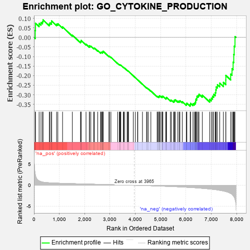

| | | Dataset | 7d |
| Phenotype | NoPhenotypeAvailable |
| Upregulated in class | na_neg |
| GeneSet | GO_CYTOKINE_PRODUCTION |
| Enrichment Score (ES) | -0.359671 |
| Normalized Enrichment Score (NES) | -1.1783965 |
| Nominal p-value | 0.17809735 |
| FDR q-value | 0.65944946 |
| FWER p-Value | 1.0 |
Table: GSEA Results Summary

Fig 1: Enrichment plot: GO_CYTOKINE_PRODUCTION
Profile of the Running ES Score & Positions of GeneSet Members on the Rank Ordered List
| PROBE | GENE SYMBOL | GENE_TITLE | RANK IN GENE LIST | RANK METRIC SCORE | RUNNING ES | CORE ENRICHMENT | | 1 | TGFB3 | | | 49 | 2.654 | 0.0363 | No |
| 2 | MAST2 | | | 59 | 2.459 | 0.0746 | No |
| 3 | BCL3 | | | 202 | 1.047 | 0.0733 | No |
| 4 | HGF | | | 276 | 0.870 | 0.0780 | No |
| 5 | DLL1 | | | 337 | 0.760 | 0.0826 | No |
| 6 | ARNT | | | 357 | 0.741 | 0.0920 | No |
| 7 | DHX33 | | | 605 | 0.593 | 0.0701 | No |
| 8 | GLMN | | | 632 | 0.583 | 0.0762 | No |
| 9 | MRE11 | | | 693 | 0.560 | 0.0775 | No |
| 10 | XRCC6 | | | 694 | 0.560 | 0.0865 | No |
| 11 | HMGB2 | | | 892 | 0.507 | 0.0696 | No |
| 12 | PDCD4 | | | 941 | 0.497 | 0.0715 | No |
| 13 | SRC | | | 1128 | 0.459 | 0.0552 | No |
| 14 | INHBB | | | 1514 | 0.388 | 0.0124 | No |
| 15 | GATA4 | | | 1837 | 0.330 | -0.0232 | No |
| 16 | NFAT5 | | | 1856 | 0.326 | -0.0203 | No |
| 17 | SMAD4 | | | 1860 | 0.326 | -0.0155 | No |
| 18 | IRF4 | | | 2054 | 0.298 | -0.0352 | No |
| 19 | SYK | | | 2186 | 0.278 | -0.0474 | No |
| 20 | C1QBP | | | 2189 | 0.278 | -0.0432 | No |
| 21 | CREB1 | | | 2243 | 0.269 | -0.0456 | No |
| 22 | MIF | | | 2357 | 0.252 | -0.0560 | No |
| 23 | OTUD5 | | | 2385 | 0.247 | -0.0554 | No |
| 24 | TLR1 | | | 2517 | 0.224 | -0.0685 | No |
| 25 | PUM2 | | | 2627 | 0.209 | -0.0790 | No |
| 26 | KAT5 | | | 2644 | 0.206 | -0.0777 | No |
| 27 | WDR83 | | | 2669 | 0.203 | -0.0775 | No |
| 28 | CLPB | | | 2706 | 0.198 | -0.0789 | No |
| 29 | PHB2 | | | 2712 | 0.197 | -0.0764 | No |
| 30 | DDX1 | | | 2718 | 0.196 | -0.0739 | No |
| 31 | RORA | | | 2730 | 0.193 | -0.0722 | No |
| 32 | BTK | | | 2958 | 0.156 | -0.0986 | No |
| 33 | PCSK5 | | | 2983 | 0.152 | -0.0992 | No |
| 34 | LEF1 | | | 3037 | 0.144 | -0.1036 | No |
| 35 | SMAD3 | | | 3303 | 0.105 | -0.1356 | No |
| 36 | SMAD7 | | | 3369 | 0.093 | -0.1424 | No |
| 37 | DDX3X | | | 3388 | 0.091 | -0.1432 | No |
| 38 | TRAIP | | | 3408 | 0.088 | -0.1442 | No |
| 39 | TRIL | | | 3428 | 0.087 | -0.1453 | No |
| 40 | PQBP1 | | | 3526 | 0.072 | -0.1565 | No |
| 41 | PIN1 | | | 3543 | 0.069 | -0.1574 | No |
| 42 | GPR18 | | | 3578 | 0.063 | -0.1607 | No |
| 43 | ABCD1 | | | 3677 | 0.047 | -0.1724 | No |
| 44 | DHX9 | | | 3693 | 0.044 | -0.1736 | No |
| 45 | HSF1 | | | 3718 | 0.039 | -0.1760 | No |
| 46 | SYT11 | | | 3732 | 0.036 | -0.1771 | No |
| 47 | IFIH1 | | | 3919 | 0.006 | -0.2007 | No |
| 48 | DDX58 | | | 3998 | -0.007 | -0.2105 | No |
| 49 | PDE4B | | | 4089 | -0.022 | -0.2216 | No |
| 50 | CHID1 | | | 4099 | -0.023 | -0.2223 | No |
| 51 | WNT11 | | | 4282 | -0.056 | -0.2446 | No |
| 52 | SETD2 | | | 4443 | -0.084 | -0.2636 | No |
| 53 | LRRK2 | | | 4467 | -0.087 | -0.2651 | No |
| 54 | NPTN | | | 4519 | -0.098 | -0.2700 | No |
| 55 | GATA3 | | | 4614 | -0.120 | -0.2800 | No |
| 56 | DLG1 | | | 4860 | -0.169 | -0.3085 | No |
| 57 | CLU | | | 4889 | -0.174 | -0.3093 | No |
| 58 | CASP1 | | | 4932 | -0.185 | -0.3116 | No |
| 59 | EP300 | | | 4941 | -0.186 | -0.3097 | No |
| 60 | XRCC5 | | | 4946 | -0.187 | -0.3072 | No |
| 61 | PRKDC | | | 4955 | -0.189 | -0.3052 | No |
| 62 | KLF4 | | | 5005 | -0.198 | -0.3082 | No |
| 63 | DDX41 | | | 5058 | -0.211 | -0.3114 | No |
| 64 | PLD3 | | | 5059 | -0.212 | -0.3080 | No |
| 65 | DRD2 | | | 5088 | -0.221 | -0.3080 | No |
| 66 | ASH1L | | | 5203 | -0.248 | -0.3186 | No |
| 67 | TMF1 | | | 5225 | -0.251 | -0.3172 | No |
| 68 | DDX21 | | | 5231 | -0.252 | -0.3138 | No |
| 69 | FZD5 | | | 5386 | -0.292 | -0.3287 | No |
| 70 | PPM1B | | | 5422 | -0.300 | -0.3284 | No |
| 71 | FABP4 | | | 5509 | -0.322 | -0.3341 | No |
| 72 | PCBP2 | | | 5539 | -0.331 | -0.3325 | No |
| 73 | FGFR1 | | | 5543 | -0.332 | -0.3276 | No |
| 74 | SPHK1 | | | 5576 | -0.339 | -0.3262 | No |
| 75 | CASP8 | | | 5678 | -0.369 | -0.3331 | No |
| 76 | TIA1 | | | 5731 | -0.386 | -0.3335 | No |
| 77 | TLR2 | | | 5761 | -0.395 | -0.3309 | No |
| 78 | TKFC | | | 5854 | -0.419 | -0.3359 | No |
| 79 | XBP1 | | | 6011 | -0.475 | -0.3481 | No |
| 80 | RAC1 | | | 6036 | -0.484 | -0.3434 | No |
| 81 | EGR1 | | | 6165 | -0.527 | -0.3512 | Yes |
| 82 | KLF2 | | | 6182 | -0.532 | -0.3447 | Yes |
| 83 | FLOT1 | | | 6276 | -0.564 | -0.3475 | Yes |
| 84 | ELF1 | | | 6328 | -0.587 | -0.3446 | Yes |
| 85 | BIRC3 | | | 6366 | -0.603 | -0.3396 | Yes |
| 86 | ISG15 | | | 6385 | -0.608 | -0.3322 | Yes |
| 87 | TRPM4 | | | 6390 | -0.612 | -0.3229 | Yes |
| 88 | CSK | | | 6428 | -0.630 | -0.3175 | Yes |
| 89 | MALT1 | | | 6432 | -0.634 | -0.3077 | Yes |
| 90 | DYSF | | | 6481 | -0.654 | -0.3033 | Yes |
| 91 | TRPV4 | | | 6515 | -0.668 | -0.2968 | Yes |
| 92 | PTPRS | | | 6646 | -0.738 | -0.3015 | Yes |
| 93 | GHSR | | | 6937 | -0.894 | -0.3240 | Yes |
| 94 | CCR2 | | | 7003 | -0.939 | -0.3172 | Yes |
| 95 | PIBF1 | | | 7049 | -0.966 | -0.3075 | Yes |
| 96 | RAB1A | | | 7096 | -0.993 | -0.2974 | Yes |
| 97 | UFD1 | | | 7157 | -1.040 | -0.2884 | Yes |
| 98 | PTPRJ | | | 7180 | -1.054 | -0.2742 | Yes |
| 99 | TSPO | | | 7194 | -1.065 | -0.2588 | Yes |
| 100 | ABCA1 | | | 7243 | -1.113 | -0.2471 | Yes |
| 101 | CYLD | | | 7333 | -1.206 | -0.2390 | Yes |
| 102 | CPTP | | | 7477 | -1.373 | -0.2352 | Yes |
| 103 | LITAF | | | 7572 | -1.511 | -0.2229 | Yes |
| 104 | NLRC3 | | | 7574 | -1.515 | -0.1988 | Yes |
| 105 | PDE4D | | | 7764 | -1.944 | -0.1916 | Yes |
| 106 | TRAF6 | | | 7818 | -2.157 | -0.1638 | Yes |
| 107 | TRAF2 | | | 7861 | -2.481 | -0.1293 | Yes |
| 108 | TRAF3 | | | 7886 | -2.695 | -0.0892 | Yes |
| 109 | PLCB1 | | | 7904 | -2.841 | -0.0458 | Yes |
| 110 | ARRB1 | | | 7935 | -3.377 | 0.0046 | Yes |
Table: GSEA details [plain text format]
Fig 2: GO_CYTOKINE_PRODUCTION: Random ES distribution
Gene set null distribution of ES for GO_CYTOKINE_PRODUCTION